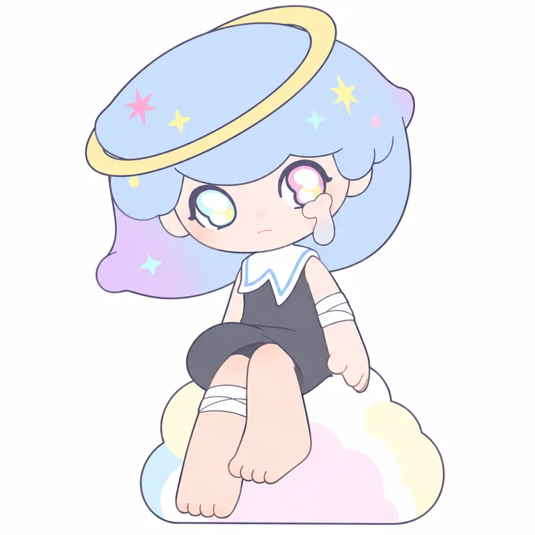

内核
接受柔软与情绪，作者希望承接悲伤；不是已经验证能消除悲伤的效果
POP MART / STANDARD STUDY / 2026.10.28
柔软的那一面， 不必一直藏起来。
TWO CLOUDS／PDC设计师
从作者原点，到角色与产品机制。
4组官方视觉 · 3项代表商品 · 9项来源
小红书按用户要求暂跳过 / 用户需求保留待验证
本轮为部分研究，已核与未知分别记录

主题先行，泪滴记住身份； 气氛还要通过结构、颜色和多轮打样进入实物。
角色设定、创作者自述与研究归纳分开。
以单侧泪滴和梦幻眼睛连接接纳脆弱的主题，再用发丝、裙摆、色彩和透明件把气氛落到实物。作者公开解释反复打样流程；情绪愿景、角色设定、商品材料与真实用户效果各自留边界。
柔软的那一面，不必一直藏起来。
本句为研究归纳（inferred），不是官方广告语或全体用户的心声。
温柔、敏感、梦幻。收集和承接悲伤，以单侧泪滴表达情绪。
创作、首次公开、签约与首品，不合并成一个诞生日。
作者先设希望承接悲伤的主题，再设计温柔妖精；云、猫与柔软感觉是自述灵感。最早原稿、首次公开与首个商品日期未知，7月6日仅角色生日，不当创作日。 [INT1] [INT2] [PRESS]
| 时间 | 核实的事件 | 证据 |
|---|---|---|
| 2023-09-07 | PARCO艺术周官方页面介绍AZURA Y2K日本限定系列；非确认最早公开 | fact [PARCO] |
| 2024-06-07 | Sunny Beach美国商品页记录 | self_report [SKU03] |
| 2024-07-10 | 日本公司公告预告7月19日–8月4日渋谷PARCO快闪及7月27日签名 | self_report [PRESS] |
| 2024-07-26 | A Dream About Stars美国商品页日期；日本活动有先行销售记录 | self_report [SKU02] [PRESS] |
| 2024-08-17/30 | 两次日本直接采访解释主题、设计与打样 | self_report [INT1] [INT2] |
| 2025-09-18 | Bowy Fluffy联名商品页记录，主要材料PVC | self_report [SKU01] |
世界观与作者意图不能直接替代用户感受。
官方将柔软和脆弱连接到鼓励人们接纳自己；作者说先设承接悲伤的主题，再设计妖精与单侧眼泪。这是世界观和创作立场，不把它写成实际能吸走悲伤或适用所有用户的效果。 [COL] [INT1]
另一篇直接采访中，作者明确承认创作想表达的与购买者收到的印象可能不同。这让分析保留多种用户解读；作者回忆有人用手帕或专用包保护携带，只是间接个案。 [INT2]
接受柔软与情绪，作者希望承接悲伤；不是已经验证能消除悲伤的效果
眼泪、星空、水手领、粉彩和云是公共语言，具体五官组合与作品经历形成角色身份
先下载并实际看图；不以生成图补作官方证据。


官方原作品通过原站图链引用；图链失效时可打开出处。当前主图不自动等于最早角色原稿。所有图像观察仅针对已看样本，无用户识别率或官方技术图结论。
固定什么、变化什么；判断均保留样本范围。
| 维度 | 本轮观察 |
|---|---|
| 原型／轮廓 | 怪兽精灵 / 大头小身 / 单角色 |
| 标记位置与记忆点 | 五官、头型：单侧泪滴、巨大梦幻眼与蓬松发型；发饰与星环随主题变化 |
| 五官 | V01蓝紫大发、云池式白高光眼，画面右侧为角色左眼泪滴，小鼻与轻微下弯嘴；不把此款衣环全部锁成全IP规则 |
| 反常点与情绪 | 大眼发色营造梦幻，单侧泪滴让柔软带着未被抹去的悲伤；研究解释 / 内收 |
| 密度与名称 | 中等 / 其他 |
泪滴与梦幻眼脸提供身份，发、裙、飘带和透明件把气氛做成形
记录渲染，不冒充生产色卡。
V01浅蓝紫发、淡金环、白蓝领与深灰裙；海滩与联名可转薄荷绿/粉蓝
轻色与透明/珠光观感为样本语言，非所有商品同色或真实柔软材料
六区屏幕取样仅对应V01当前渲染，含亮部和暗部；没有校色、透光或实物色差测试。
本地V01转RGBA；左上为坐标原点，每个中心9×9逐通道中位数。阴影、高光、压缩与显示均会影响色值；未测面积配比，也没有校色或实物色差验证。
价格、地区、材料、尺寸与发售日期分别记录。
| 商品 | 当日地区标价／发售记录 | 规格／材料／边界 |
|---|---|---|
| × INSTINCTOY Snuggle with Bowy Fluffy 单体 [SKU01] [COL] | USD 29.99 US / 2025-09-18 | 8.8cm 主要PVC Fluffy为品名，不据此写成聚酯毛绒；主要材料不等于完整BOM。 |
| A Dream About Stars 手办 [SKU02] [COL] | USD 16.99 US / 2024-07-26 | 6.7–10.6cm ABS／PVC 美国整盒12盒不重复，隐藏概率未核；日本先行发售与美站日期分开。 |
| Sunny Beach 单体 [SKU03] [COL] | USD 29.99 US / 2024-06-07 | 3.26英寸 PVC／ABS 海滩服饰与角色设定23cm身高无关；原图布景不是规格。 |
作者给出从设计图、CG原型、打印样到量产样反复沟通的过程：透明件与涂装的印象可能在实物阶段变化，风则由发、带和裙的方向表达。这是有价值的制作流程自述；没有工厂工时、良率、成本或本轮打样记录。 [INT1]
公司、IP、系列、年度与半年度分别看。
日本公司称本地受欢迎、活动方提供限定系列与快闪，支持经营动作存在；本轮没有独立销量或IP收入。当前美国目录三项也不能代表全球全部产品、断定热度或推算盈亏。 [PRESS] [PARCO] [COL]
财报按IP归类收入不等于作者收入、授权费、零售GMV或二手市场规模。材料百分比不等于成本配比；未披露团队、毛利和库存不作估算。
本批遵照用户要求先跳过小红书；不编造评论与人群比例。
| 维度 | 证据与假设 |
|---|---|
| 人群入口 | 梦幻审美、情绪表达与精细材质收藏是候选入口；无人口统计 |
| 接触地点 | 官方渠道、PARCO快闪及作者签名；本批不做小红书 |
| 购买证据 | 三个美国商品可确认；日本热门及珍惜携带是公司/作者自述，没有单IP收入 |
| 识别线索 | 角色左眼一滴泪、梦幻发色、星空、风与柔软场景 |
| 分享行为 | 作者回忆有人用手帕/专用包保护携带；不是本轮直接用户观察 |
| 破圈 | 日本本地快闪、先行商品和作者互动提供触点；新增用户与持续转化未知 |
浅色、透明感与温柔神情可能吸引第一眼（假设）
单侧泪的意义、星空梦与作者制作细节可形成收藏知识；实际用户认知未核
商品存在与活动可追溯；作者回忆保护携带为间接线索，不是单IP付费、复购或粉丝增长统计。
今天的审美不能直接反推早期成功。
难过却习惯克制、不愿向人解释的时刻；柔软与力量可以共存，不必用积极表情盖过所有情绪
我没有一直开心，也可以被温柔对待。
柔软与承接悲伤，而非必须表现快乐；治疗效果未验证。
可与强表情哭泣、酷感外放角色作表达对照；不能仅凭情绪主题宣布市场稀缺或消费者普遍需求。
2023日本Y2K系列、2024先行销售与作者签名提供本地接触点。它们可能共同作用于注意力和信任，未有对照数据把地方文化、造型、作者露面和渠道贡献拆开。 [PARCO] [PRESS]
候选机制不冒充因果证明。
| 候选机制 | 局部支持 | 边界与替代解释 |
|---|---|---|
| 从情绪主题出发，把单侧泪变成身份锚点 inference | 作者说明先设承接悲伤主题，左眼一滴泪为共同线索；当前主图泪滴清楚。 [INT1] [MAIN] | 作者意图不是全体用户体验，没有测试去掉泪滴后识别或购买变化。 |
| 气氛需经过结构、配色和工艺协作才能进入实物 inference | 作者解释风由发、裙、带表现，设计图到CG、打印及量产样反复调整。 [INT1] [INT2] | 是作者报告的流程，不是本轮工厂审计；没有工时、良率、成本或可复制生产参数。 |
| 本地先行商品与作者快闪提供线下接触理由 hypothesis | 2023 PARCO系列、2024快闪与先行销售、签名安排可追溯。 [PARCO] [PRESS] [INT1] | 活动预告与回顾支持存在，不代表独立销量、ROI或长期复购。 |
| 创作者表达与购买者感受可以不同，需保留反馈空间 inference | 作者直接谈作品想表达的与用户接收的印象可能不同，也关注好坏反馈。 [INT2] | 本轮没有拿到原评论和用户访谈，不能替用户选择一个唯一解释。 |
测试输入、依赖与观察完整保留。
蓝紫大头发与星点、斜金环、云池双色眼、画面右眼泪滴、白蓝领深裙、手臂/腿部白带、裸脚交叠坐云均接近。金环较厚、泪与云座边线简化，透明珠光转为浅色块，仍有微弱色过渡；仅当前可见视角附图平面转译通过。
研究重建词，不是创作者原词。参考图SHA256与真实输出路径见测试档案。
Use the attached official character rendering as the sole identity, hair, eyes, outfit, proportions, pose and support reference. Translate the exact single seated fairy girl and her cloud-like support into a clean flat 2D full-body illustration on a white square canvas. Preserve the oversized rounded pale lavender-blue bob with broad curved fringe and the softly curling lavender lower side on viewer-left, scattered tiny pastel four-point and six-point stars and dots in the hair, and the thin pale-gold tilted oval planet ring crossing diagonally around the hair. Preserve the broad pale peach face, extremely large asymmetrical-looking cloud-pool eyes with dark lavender rims and tiny outer lashes: viewer-left eye has cyan and pale-yellow rings around white rounded cloud-like highlights, viewer-right eye has pink and pale-yellow rings around white cloud-like highlights. Keep the single pale pink-white tear shape beneath the viewer-right eye extending down into a long gray-clear droplet, tiny subtle nose and small quiet downturned mouth, with no eyebrows visible. Preserve the sleeveless charcoal-gray short dress, large pointed white sailor collar with thin light-blue edging, white wrap band around the visible viewer-right upper arm and another white wrap band around the viewer-left lower leg. Keep the actual three-quarter seated pose, slightly viewer-left tilted head, viewer-right arm hanging beside the hip, short bare legs crossing in front, the raised viewer-right bare foot forward and the lower viewer-left bare foot resting down. Preserve the very large head and tiny torso relationships and the exact foot overlap from the reference. Keep the irregular rounded cloud-like white support under the body, represented by a few pale pink, pale yellow and pale blue flat color patches. Use thin clean dark outlines and simple flat local color regions, replacing translucency and pearly reflections with clear pale color shapes. Remove all dimensional shading, gloss, cast shadows, molded plastic texture and photographic lighting. Do not add smiles, black pupils, extra tears, wings, shoes, scenery, text, logos or watermarks. Reconstruct only this visible view and do not invent the unseen back.下载原词 ↓
无数值相似度、多人盲测或重复稳定性结论。未经测试的原创黑白、平面、实物六条词不进入可执行正式区；研究复现不等于原创身份开发。
沿用既有study v0.3，不升级skill。
可借先明确要承接何种情绪，再找具体场景；避免把柔软必然等同疗愈结果。
可借一个小标记如何连接主题，以及用姿态/飘动构件表现无形的风；重新设计五官，避免单侧泪加云池眼和梦幻大头发组合。
参考设计图到CG、打印样和量产样多轮沟通的过程；透明件与涂装需实物比较，不能从一张生成图推可制造性或成本。
截止2026-10-28（北京时间）；访问程度与结论边界逐项列出。
POP MART美国站 · 发布：未知 · 访问：full
直接读取官方HTML，支持PDC Two Cloud、柔软/脆弱表达及三个美国SKU价格；网页检索打开失败不影响本轮实际HTML读取。
HOBBY Watch／作者直接采访 · 发布：2024-08-17 · 访问：full
作者谈左眼泪、星空梦、风的结构和设计到量产的多次调整；日本售价为采访当时，商品图注整盒文字疑点不用于概率结论。
アニメ！アニメ！／作者直接采访 · 发布：2024-08-30 · 访问：full
PDC、作者动机、用户携带回忆与表达/接收可能不同；同2024日本活动背景，非随机用户调查。
POP MART JAPAN／PR TIMES · 发布：2024-07-10 · 访问：full
7/19–8/4活动与7/27签名预告、7/6生日及23cm虚构身高；不当现实全部商品尺寸或未经披露销量。
渋谷PARCO／活动方 · 发布：2023-09-07 · 访问：partial
已读AZURA活动及作者段落，支持2023日本限定Y2K记录；不是角色最早首发。
POP MART · 发布：未知 · 访问：partial
已下载并看1760×2480原图，作为V01；原图创作日/对应具体SKU未知，不补作最早原稿或材料证据。
POP MART美国站 · 发布：未知 · 访问：full
Fluffy为品名，不据此写成聚酯毛绒；主要材料不等于完整BOM。 发售记录为该地区页面日期；当日标价不是实际销量。
POP MART美国站 · 发布：未知 · 访问：full
美国整盒12盒不重复，隐藏概率未核；日本先行发售与美站日期分开。 发售记录为该地区页面日期；当日标价不是实际销量。
POP MART美国站 · 发布：未知 · 访问：full
海滩服饰与角色设定23cm身高无关；原图布景不是规格。 发售记录为该地区页面日期；当日标价不是实际销量。